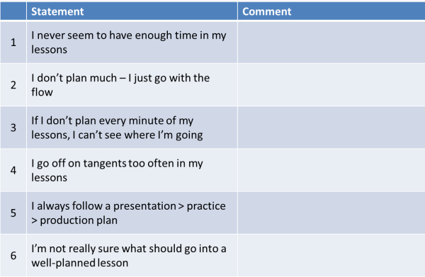

Strand 2: Planning

Where are you now?
Start with some introspection. Here are some statements to do with how we plan. For each statement, decide if you agree fully with the statement, agree a bit or don't agree. Then click on the table for some comments.

The idea here was not to say whether your current planning behaviour is in some way 'right' or 'wrong' but to get you to think about what you do and consider alternatives.
Obviously, even if you agreed fully with all 6 of these areas, you can't address them all at once so you need to select one, two or three that you think are important and skip down to the list below to find out what targets you might set yourself to develop this area of your teaching. Then click on the links to go further in each area.
- 1: I never seem to have enough time in my lessons
- This is probably the most common result of poor planning and it
has important consequences. Not least, that the learners never
see their own progress.
Click here for more. - 2: I don’t plan much – I just go with the flow
- That may be appropriate in some cases but it can also lead to a
loss of a sense of direction in your learners (and you) and, what's
worse, can result in a jumble of disconnected, one-off lessons.
Click here for more. - 3: If I don’t plan every minute of my lessons, I can’t see where I’m going
- Just as you can under-plan a lesson, you can over-plan one and
end up teaching the plan rather than the learners. You need to
develop some flexibility.
Click here for more. - 4: I go off on tangents too often in my lessons
- It's a good thing to be responsive to learners but if that too
often leads you off on tangents which are irrelevant to the aims of
the lesson, then you will end up frustrating your learners because
they lose a sense of direction and achievement.
Click here for more. - 5: I always follow a presentation > practice > production plan
- It looks like you need to be a bit more adventurous and get out
of your comfort zone a little more. There's also an issue here
with planning a lesson structure which suits the targets of the
lesson rather than squeezing your procedures into a
one-size-fits-all format.
Click here for more. - 6: I’m not really sure what should go into a well-planned lesson
- Most initial training courses have something on lesson planning
but many cover the area rather briefly (because there's so much else
to do). If this is your case, guides on the site may help you
plan more effectively.
There is an essential guide here and a guide to ways of structuring lessons here. - In addition, the section on alternative types of lesson
structure in this development section will be helpful.
If you are taking a Cambridge Delta course, by the way, there's a guide to lesson planning for Delta in this site.
In general, you may find Bloom's taxonomy of educational objectives helpful in developing your planning skills mostly, but not solely, because it gives you a way of measuring demands. Click here to go to that guide.
If you have another issue with planning that you would like some advice about, contact ELT Concourse and we'll see what we can do to help.